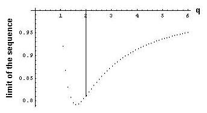
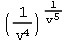

Geoffrey works on poly powers
-a 6th grader, his Dad, Don, Jerry
and Theo, - in October, 2002
Geoffrey wrote the following page after
the work done below this. It's good that students get used to writing up work
they do, themselves!
Polypowers
Polypowers
are a mathematical concept that takes a number and raises it to a power then to
another power, and so on ex:
10^10^5. To compute these
equations you must pretend that there are parentheses around the top most
powers. Ex:
10^(10^5) or 10^(10^(10^5)). If
you compute the top ones first, and the lower numbers are greater then the
higher numbers, then doing the top ones first will increase the value.
I did an experiment where I took 1/2^1/4^1/8^1/16...
It turns out that it approaches about 0.8099 if there are an even number
of powers, and about 0.5702 if there are an odd number of fractions.
Then I did 1/3^1/9^1/27… those
approach a slightly higher number for even powers, and a slightly lower one for
odd ones. If you then do ¼^1/16^1/64, and repeat, the graph looks like
this:
The
minimum of this is about 1/1.6^1/2.56^1/4.096… which equals about 0.79.
As the numbers on the x axis go to infinity, the numbers on the y axis go
to 1. When the x axis numbers get
less than one, the y axis numbers get more than one.
As the x axis numbers go to zero, the y axis numbers approach infinity.
This was a interesting project because the powers determining the
fractions in the powers. It was
also interesting because it approached infinity on two different axes.
Fine
job Geoffrey!!
N.B. The order of events
below is not exactly the way
it happened, but close, as Don remembered it. Don had worked on
polypowers.
Geoffrey was working on the binomial expansion (a+b)n
which Don thought would naturally lead to substituting 1->a and
1/n->b and eventually to get to e.
This idea was put aside, when Don thought Geoffrey would be interested in Ian's
work on powers of powers to get e.
Geoffrey actually did the work as Ian had done, which used the polypowers like . Don gave Geoffrey the article
"Polypowers" from the book Knotted Doughnuts and Other Mathematical
Entertainments by Martin Gardner; W. H. Freeman and Co., NY.
After working with powers of powers using whole
numbers in Ian's work, Geoffrey's immediate thought was to start with fractions.
(This was new to Don also and he worked hard trying to understand what Geoffrey
and his Dad were doing in Mathematica). The strategy was to go
down the polypower tower; by hand this would look like this
 with
parentheses where you want them; in Mathematica it is typed in like this,
with the answers shown below each:
with
parentheses where you want them; in Mathematica it is typed in like this,
with the answers shown below each:
N[(1/2)^(1/4)]
0.840896
N[(1/2)^((1/4)^(1/8))]
0.558297
N[(1/2)^((1/4)^((1/8)^(1/16)))]
0.814498
N[(1/2)^((1/4)^((1/8)^((1/16)^(1/32))))]
0.568846
Then he tried this last one, without using all the parentheses, N[(1/2)^(1/4)^(1/8)^(1/16)^(1/32)]
and got the same answer 0.568846 .
N[(1/2)^((1/4)^((1/8)^(1/16)^(1/32)^(1/64)))]
0.810339
N[(1/2)^((1/4)^((1/8)^(1/16)^(1/32)^(1/64)^(1/128)))]
0.57013
Then Geoffery and his Dad wrote this program in Mathematica, so
they could try 20 powers:
n=20;a=(1/2)^n;
Do[b=(1/2)^k;c=b^a;Print[N[a]];a=c,{k,n-1,1,-1}];
Print[N[a]]
4.76837158203125*10-7
0.999993
1.907514687890535*10-6
0.999976
7.63153439460994*10-6
0.999915
0.0000305444
0.999704
0.000122397
0.998982
0.000492084
0.996595
0.00199506
0.988998
0.00824088
0.966308
0.0351206
0.907216
0.151601
0.810451
0.570203
Geoffrey's first conjecture was that if one kept going far enough, there were
two numbers that these were approaching, one near 0.81 and the other near
0.57.
Then Geoffrey tried a denominator of 999, with 22 powers
n=22;
q=999;
a=(1/q)^n;
Do[b=(1/q)^k;c=b^a; Print[N[a]];
a=c, {k,n-1,1,-1}];
Print[N[a]]
1.0222550367160772*10-66
1.
1.0202115488976816*10-60
1.
1.0181721460114353*10-54
1.
1.0161368198915585*10-48
1.
1.0141055623885952*10-42
1.
1.0120783653693804*10-36
1.
1.010055220717007*10-30
1.
1.0080361203307936*10-24
1.
1.0060210561262524*10-18
1.
1.004010020035056*10-12
1.
1.002003004292949*10-6
0.999993
Again the results were alternating, the odd number of powers were going
toward one and the even number of powers were going to zero. Geoffrey tried many different numbers for the denominator, with the same
conclusions. He even tried q=1027 !!
Geoffrey's Dad wrote the following program to show what
happens to the output as q, the denominator, changes from 2 to 3.
Geoffrey's Dad then wrote a program to show the upper limits of the outputs
as q, the denominator increases (the same one in Geofrrey's page above:
upper=Table[0,{j,1,50}];
Do[
n=10;
q=1+(j-1)*5/(50-1);
a=(1/q)^n;
Do[b=(1/q)^k;
c=b^a;
(* Print[N[a]]; *)
a=c,{k,n-1,1,-1}];
upper[
[ j ] ]={q,a},
{j,1,50}]
Then he plotted these upper values:
ListPlot[upper]

q, the denominator, is on the horizontal scale. When q is 1, we get 1. When q
is about 1.62, the the sequence of upper outputs approaches a minimum (about
.79). When q is 2, we get a sequence which approaches about 0.81(as they did
above). And as they
found before, as q, the denominator increases from1.62, the upper limits
approach 1. Later, Geoffrey's Dad wrote a program to get both the upper limits
and the lower limits on the same graph, below:
Don suggested that Geoffrey write an email to Ian about what he was doing; he wrote this:
Dear Ian,
I am a student currently studying with Don Cohen. I did
stuff with your polypowers to get e,
then started one of my own. I made a program in
Mathematica doing 1/2^(1/4^(1/8... It turns out that when there are an odd
number of exponents it approaches a number near 0.8099.When there are an even
number of exponents it approaches a number near 0.5702. - Geoffrey
To see what the process looks like, Goeffrey wrote this program in
Mathematica:
q=v
n=5;
a=(1/q)^n;
Do[ b=(1/q)^k;
c=b^a;
Print[a];
a=c,{k,n-1,1,-1}];
Print[a]
The output is:
v

So the work is done from the top down, which is what Martin Gardner suggested. Try (10^10)^10 and 10^(10^10); are they the same?
Don talked to Jerry, his partner
in The Math Program. Jerry took the problem to Theo Gray who works at Wolfram
Research Inc. (and coincidently was one of Don's students as a 5th grader, and did the matrix diagrams in his book "Changing Shapes With
Matrices", and has developed "The
Wooden Periodic Table Table").
He came up with the following Mathematica work to add to what Geoffrey and his
Dad did: n is the denominator of the starting fraction, k is the exponent
geoffrey[n_,count_]:=Apply[Power,Table[1/n^k,{k,count}]];
t
=Table[geoffrey[2,c],{c,1,20}]
(Don had Geoffrey figure out how to get from the second number above to the
third). Theo printed out a table of 50 of the decimal values of these powers to 35
digits:
t=Table[N[geoffrey[2,c],35],{c,1,50}]
{0.50000000000000000000000000000000000,0.84089641525371454303112547623321490,
0.55829656495243210628551030301446675,
0.81449843990595813521530437718983796,
0.56884576352844016137451638989793001,
0.81033928445346719291540110854487056,
0.57012978330081164270542728643548484,
0.80998490629061354357817850780898360,
0.57020181443662056433203193609246494,
0.80997234902270179178323730405307065,
0.57020338505011507076049853520819860,
0.80997218362952486364210534447034720,
0.57020339736532822895370286392953437,
0.80997218286703455279381377382640776,
0.57020339739834416243204059210364783,
0.80997218286585746057880855796828552,
0.57020339739837325404915898057822728,
0.80997218286585687323799028724432460,
0.57020339739837326221120728332388785,
0.80997218286585687314592471673916242,
0.57020339739837326221191796810348560,
0.80997218286585687314592028699579352,
0.57020339739837326221191798690976296,
0.80997218286585687314592028693160273,
0.57020339739837326221191798690991161,
0.80997218286585687314592028693160245,
0.57020339739837326221191798690991161,
0.80997218286585687314592028693160245,
0.57020339739837326221191798690991161,
0.80997218286585687314592028693160245,
0.57020339739837326221191798690991161,
0.80997218286585687314592028693160245,
0.57020339739837326221191798690991161,
0.80997218286585687314592028693160245,
0.57020339739837326221191798690991161,
0.80997218286585687314592028693160245,
0.57020339739837326221191798690991161,
0.80997218286585687314592028693160245,
0.57020339739837326221191798690991161,
0.80997218286585687314592028693160245,
0.57020339739837326221191798690991161,
0.80997218286585687314592028693160245,
0.57020339739837326221191798690991161,
0.80997218286585687314592028693160245,
0.57020339739837326221191798690991161,
0.80997218286585687314592028693160245,
0.57020339739837326221191798690991161,
0.80997218286585687314592028693160245,
0.57020339739837326221191798690991161,
0.80997218286585687314592028693160245}
This confirms that starting with 1/2, the sequence of the odd
number of powers of powers goes to 0.57020...
and the sequence of the even number of powers of powers goes to 0.80997...Theo
also realized that the sequences converge rapidly.
Then Theo graphed these numbers with this command:
ListPlot[l,PlotJoined®True];
It is always nice to see a picture of what is happening!
Don
entered the first of the number 57020339739837326221191798690991161 in N.J.A. Sloane's The
On-Line Encyclopedia of Integer Sequences to see what would happen and it
wasn't able to find it.
Below is what makes teaching very exciting!
November 12, 2002 , Don received the following email:
"I won the mathematics and
computers section of the 1968 Metropolitan Detroit Science Fair with a project
titled "Infinite Exponentiation." The core of the project was
the question, "Why is the square root of two equal to the fourth root of
four?
I found there were pairs of numbers from one to infinity, around a largest
value, which was the e-th root of e. (about 1.44)
I used an IBM 1620 computer and
about thirty hours of computer time to generate values. My algebra skills
were such then that I was able to prove eth root of e was the largest value of
nth root of n.
Thirty years later the
calculations take a few seconds in mathematica".
-H. F., NYU
It's nice to know other people are interested in what we are
doing!
To
Geoffrey's work on the area under curves and the integral
To
Geoffrey's work on infinite series
To
Geoffrey's work on the Fibonacci numbers
To
Geoffrey's work on graphs
To
Geoffrey's work on the 6 trig functions
Back to Patterns
in Mathematics
Back to New
Discoveries
To order
Don's materials
Mathman home